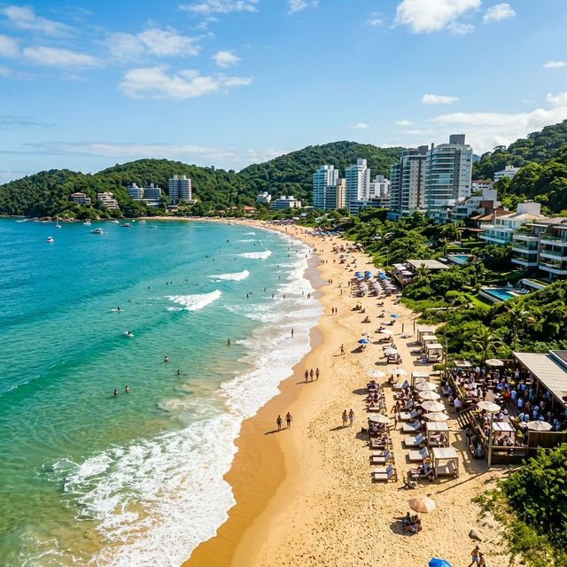

Airbnb em Itajaí é sinônimo de versatilidade. Em 2026, a cidade consolidou-se como o centro econômico do Litoral Norte Catarinense, oferecendo aos anfitriões dois públicos distintos mas extremamente lucrativos: o executivo do porto e o frequentador da badalada Praia Brava.
Praia Brava: O Epicentro do Desejo
Se você busca o "hóspede ostentação", a Praia Brava é o seu lugar. Com um dos metros quadrados mais valorizados da região, a Brava atrai o público que quer estar perto do Warung Beach Club e do Belvedere. No Airbnb, isso se traduz em diárias elevadas para apartamentos com design moderno e proximidade com o mar.
Dica de Superhost: Na Brava, a estética é tudo. Invista em fotografia profissional e decoração minimalista industrial ou boho-chic para atrair o público que valoriza o visual do imóvel.
Marina Itajaí e o Turismo Náutico
A Marina Itajaí não é apenas um estacionamento de barcos; é um polo de eventos internacionais como a Ocean Race. Isso cria picos de demanda fora da temporada de verão, permitindo que anfitriões bem localizados no centro ou na Vila Operária mantenham suas taxas de ocupação lá no alto.
O Público de Negócios
Diferente de cidades puramente turísticas, Itajaí respira o Porto. Isso significa que, de segunda a quinta, há uma demanda massiva por estadias corporativas. Apartamentos funcionais, com bom Wi-Fi e checkout simplificado, são as máquinas de fazer dinheiro nesta região central.
Checklist para o Anfitrião em Itajaí
- Praticidade para Check-in: Use fechaduras eletrônicas; o hóspede executivo valoriza a independência.
- Perto da Gastronomia: Destaque a distância para o Mercado Público de Itajaí ou para os bistrôs da Brava.
- Conectividade: Fibra ótica de alta velocidade é item básico para o nômade digital e o executivo.
Sua Propriedade em Itajaí no Topo
Nossa gestão utiliza algoritmos de precificação para capturar tanto o pico de eventos náuticos quanto as estadias corporativas recorrentes.
Conhecer Gestora em Itajaí